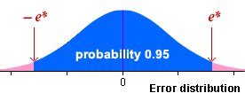
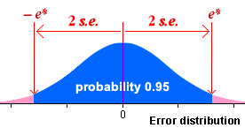

95% bounds on the error
If we know the error distribution of an estimator (or an approximation to it), we can find a range of values within which the error will lie with probability 0.95,

Expressed in an equation,
Prob ( -e* < error < e* ) = 0.95
95% confidence interval
Since the error is the difference between the estimator and the unknown parameter, this can be rewritten as:
Prob ( estimate - e* < parameter < estimate + e* ) = 0.95
The interval
estimate - e* to estimate + e*
is called a 95% confidence interval and we have 95% confidence that it will include the unknown parameter value.
Confidence interval from standard error
The 70-95-100 rule of thumb states that about 95% of values in most distributions are within 2 standard deviations of the mean. For unbiased estimators (with zero mean), we therefore have the approximation:

This leads to the approximate 95% confidence interval
estimate - 2 s.e. to estimate + 2 s.e.
Since the standard error of most commonly used estimators can be readily found by either a formula or statistical software, a 95% confidence interval can be easily found for most estimators.
Refinements
If we can only find an approximation to the error distribution, the method above would only give an approximate 95% confidence interval. The '± 2 s.e.' approximation is a useful guide in most circumstances, but we will refine this type of confidence interval for some estimators to make the confidence level closer to 95%.